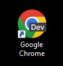
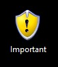
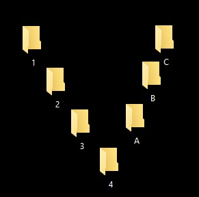

Create the following folders under the specified locations using windows:
1) NIELIT on desktop
2)R1 on the C:
3) D2 on desktop
4)R2 on the C:
5) Create a folder D2-1 under the D2 folder
6) D1 on the C:
7) Create a folder NIELIT-1 under the D1 folder
8) Copy this D2-1 folder and paste it under R1 folder
9) Delete the folder D2-1 from R1 folder
10) Create the folder R1-1 under R1 folder
11) Copy R1-1 folder and paste it under the R2 folder
12) Rename folder R1-1 under R2 folder as ‘subfolder of R2’
13) From the c: copy all files to folder R2
14) Delete all the files from the folder R2
15) Recover all the deleted files
I) Antivirus
Step 1: Open Search Bar (Win + S) -> Type "Virus & threat protection" and click on it.
Step 2: Click on Scan options and choose the given option:
Quick Scan
Full Scan
Custom Scan
Microsoft Defender Offline scan
Step 3: Then Click on Scan now button.
II) Disk Cleanup Tool
Step 1: Open Search Bar (Win + S) -> Type "Disk Cleanup" and Click on it.
Step 2: Select the drive you want to clean up: such as C:, D:, E: then click on OK
Step 3: Check on boxes and Click on OK
III)Disk Defragmenter
Step 1: Open Search Bar (Win + S) -> Type "Defragmenter and Optimize Drives" and Click on it.
Step 2: Select the drive you want to Optimize drives: such as C:, D:, E: click on Analyze after Analyzed then click on Optimize.
Step 3: After Optimized then click on close button.
IV) Compression Tool
Step I : Download 7-Zip software from Internet.
1. Goto Google Chrome.
2. Type Download 7-Zip for Windows.
3. Find Official Link of related software.
4. Choose your file to download according to OS bit (32 or 64 bit ).
5. Click Download button.
Step II. Install 7-Zip software in your computer.
1. Goto download folder and search your 7-Zip software.
2. Right Click on 7-Zip software.
3. Click on "Run as administrator".
4. Click on "Yes" on User Account Control.
5. Click on "Install" button.
6. Finally Click on close button.
Step III. To Compress any folder.
1. Right Click on the folder which you want to compress.
2. Click on 7-Zip.
3. Choose and click on "Add to Filename.7z" or "Add to "Foldername.zip".
4. Your compressed file is ready.
How to decompress(extract) your compressed file.
1. Right click on compressed file.
2. Click on 7-Zip.
3. Choose and Click "Extract Files" or "Extract Here".
Your decompress file is ready.
IV) Disk Management Tool
1) How to create Hard Disk Partition?
Step 1: Type "Create and format hard disk partitions" on Search bar and press Enter.
Step 2: Right click on drive which you want to make partition.
Step 3: Click on "Shrink volume"
Step 4: Enter the amount of space to shrink in MB (Ex: 100GB = 100000 ) --> Click "Shrink"
Step 5: Now, Right Click on "Unallocated" drive --> Click on "New Simple Volume"
Step 6: Click "Next" on New Simple Volume Wizard
Step 7: Click "Next" on Specify Volume Size (New Simple Volume Wizard)
Step 8: Click "Next" on Assign Drive Letter or Path (New Simple volume Wizard)
Step 9: Click "Next" on Format Partition (New Simple volume Wizard)
Step 10: Click "Finish" Completing the New Simple Volume Wizard (New Simple volume Wizard)
2) How to Combine the drive or (Extend the drive)?
Note:- To Extends the drive: First you need empty drive to Delete Volume to Make Unallocated drive.
Step 1: Type "Create and format hard disk partitions" on Search bar and press Enter.
Step 2: Right click on empty drive and Click on "Delete Volume" --> Click on "Yes" on Delete Simple Volume.
Now, Unallocated drive is ready.
Step 3: Right click on drive which you want to Extend --> Click on "Extend Volume"
Step 4: Click "Next" on Extend Volume Wizard.
Step 5: Click "Next" on Select Disks (Extend Volume Wizard).
Step 6: Click "Finish" on Completing the Extend Volume Wizard (Extend Volume Wizard).
I) Icons related work:
1) Change Icon of Google Chrome browser as Chrome Dev Icon. 
2) Create a New Folder and Rename it as "Important" and Change Icon as Security Icon.
3) Set all Icon as Large Icons.
4) Create Folders name as 1,2,3,4,A,B,C and set all folder in V shape on Desktop.
5) Sort All Desktop Icon by Name.
6) Hide all Desktop Icons.
II) Create shortcut on desktop of any software/file:
1) Create Folders C under B under A, and Create Notepad file name as computer and Create shortcut on Desktop
2) Create shortcut of Chrome Browser on Desktop.
III) Hide/UnHide a folder from desktop or any location:
1) Create a "NIELIT" and "NIELIT_1" Folder
2)"NIELIT" hide it as blur icon.
3) "NIELIT_1" hide it properly.
IV) Change desktop background: (on Background)
1) Download Nielit Logo and set Desktop backgound as Picture.
2) Download any 5 flowers and set Desktop backgound as Slide Show.
3) Change the wallpaper of your computer and set it to a paint brush file made by you.
4) Set Desktop backgound as Black color.
V) Screen Saver related work (on LockScreen ):
1) Set your name as the text and change it to ‘marquee’
2) Set your name as the text and wait time should be 2 minutes.
3) Set Screen Saver as Time in Blue Color, Font Name: "Segoe Script", Font Style: "Bold Oblique", Rotation Type: "See-Saw", Rotaion Speed: Fast
VI) Change backgound (on Lock Screen : Win + L) :
1) Change background on LockScreen as Slide Show.
2) Set background on login screen as Picture.
VII) Colors related works :
1) Set the color in Dark and Transparency effects should be off .
2) Set the Title bar and windows border in Blue Color.
VIII) Themes related works:
1) Show This PC, Control Panel, Network as Desktop Icon.
2) Set any Themes which you want you like.
IX) Font related Works:
1) Install Hindi Font (Kruti Dev 010 or Mangal Font) in your system.
X) Start related Work:
1) Show Most used apps and recently added apps in Start in full Screen.
XI) Task Bar Related Works:
1) Pin a Chrome Browser in Task bar.
2) Set the Task Bar in Right side of the screen.
1) Set your brightness level in 40%.
2) Turn On Night Light and set its Strength in 60%.
3) Set Hours of the Night Light ( Turn On=8:30PM, Turn Off=10:30AM)
4) Set the night light automatically (Sunset to Sunrise)
I) Mouse Setting related work:
1) Display pointer trails as Long
2) Set your mouse pointer to automatically move pointer to the default button in a dialog box.
3) Change the normal pointer of a mouse to another pointer as busy.
4) Change the normal pointer of a mouse to another pointer as hand cursor.
5) Set the mouse pointer motion speed as Fast.
6) Interchange the functions of left and right mouse buttons.
7) Set the mouse click in this way, which you can drag without holding the mouse button.
8) Set the mouse wheel, which you can scroll one screen at a time.
II) Date and Time Setting related work:
1) Set the date advanced by 2 months.
2) Reset the system date & time.
3) Set the system time late by 2 hrs: 40 minutes.
4) Set the Yesterday date and time in your Operating System.
III) Program and Features related work:
1) Download and Install Notepad++ Editor in your system.
2) Uninstall the Notepad++ from your System.
IV) User Account related Work:
1) Create a user account name as "ComputerUser" as Standard Account on your PC without password and Sign in "ComputerUser".
2) Change your Profile Pic of Account which made by you on Paint on Folder "ComputerUserFolder" on Desktop.
3) Change account name ("ComputerUser" to Yourname)
4) Change your password of your account.
5) Delete the Account with "Keep Files".
6) Create a user account name as "YourName" as Standard Account on your PC without password and Sign in..
7) Create a Folder name as "OLevel" on Desktop and change the permission as Deny for Admin in your folder. (Deny as Full Control)